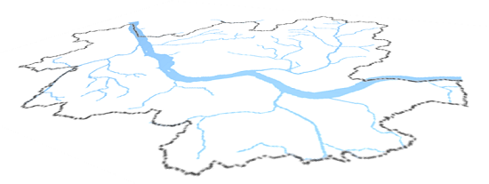
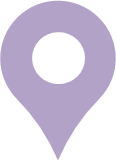
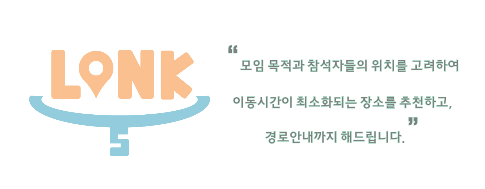

>







1. 모임 목적을 선택해주세요
장소에 따라
유형에 따라
빵집
바
카페
운동장
백화점
도서관
영화관
공원
음식점
쇼핑몰
한식
일식
중식
중식
양식
패스트푸드
브런치
점심
저녁
팀플
데이트, 친구, 가족
쇼핑
음식
힐링
파티
회의
동창회, 친목모임
2. 모임 참석자들의 위치를 입력해주세요
3. 지도 위에 최적의 장소를 표시해줍니다
4. 모임 참석자 별로 경로를 안내해줍니다